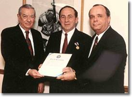
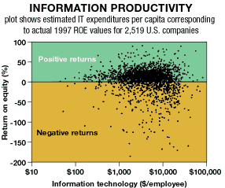

the Partisan
Paul Strassmann has been a partisan for 55 years, and he still enjoys the work
By Peter Golden
photograph by John Rae
Paul Strassmann, CEO of The Software Testing Assurance Corp. in New Canaan, CT, is still a partisan, a fervent supporter of causes--in this case, his view that today's executives are spending far too much money on information technology. According to Strassmann, senior corporate executives refuse to acknowledge that there is no demonstrable relationship between computer spending and corporate profits.
The youthful-looking, 70-year-old Strassmann appears to be an unlikely partisan. He has merry eyes and wavy hair brushed back from his high forehead, and he wears a tweed sports jacket and casual shirt and slacks. He has lived with his wife, Mona, an artist and head of the family-owned publishing company, The Information Economics Press, on the same five acres of rolling, tree-shaded, hills in New Canaan for 29 years.
Strassmann has converted the guest house into offices, where, in one of the smaller rooms, he sits barefoot at a computer and composes his warnings to the corporate universe about the resources they are squandering on IT.
"It has become an arms' race," Strassmann says, his voice tinged with a note of amused outrage. "And it is fueled by the media and the computer industry, always pushing for companies to make fancier and fancier acquisitions, without keeping their eyes focused on the bottom line. The actual cost of a computer is only part of what a company pays to own one. I paid approximately $2,400 for my desktop. However, given my consulting fee, my monthly cost for recovering from crashes, holding the phone to my ear while waiting for a technician to answer at a help desk and straightening out software glitches, [the total cost] far exceeds what I paid for the computer."
Strassmann's objection is not simply the total-cost-of-ownership argument. Rather, he maintains that businesses have not considered their IT spending in the context of their overall operations, from a philosophical point of view, evaluating their precise needs and tailoring their budgets to meet them instead of blindly following their competitors.
Strassmann has a wide range of interests in the relationship between business and technology. He has outspokenly deplored the lack of network security in corporate America. But his passionate convictions about the wastefulness of corporate IT spending have been churning and, occasionally, erupting for more than two decades.
| Donald Atwood, deputy secretary of defense (left), and Duane Andrews, assistant secretary of defense (right), present Paul Strassmann with the Defense Medal for Distinguished Service, the DOD's highest civilian award. |
Like any true partisan, Strassmann pursues his trade inside occupied territory. He has been working the high-tech terrain since 1954, shortly after earning an engineering degree from Cooper Union in New York City. Quite by chance his first job after graduation was at a firm that played a major role in designing the New Jersey Turnpike. One day his boss stopped by Strassmann's drafting table and mentioned that the state was having trouble with traffic jams at the highway toll booths. He asked Strassmann if he could see if something could be done.
"I was delighted," recalls Strassmann. "I was told to use a computer to explore the situation. They let me play with it day and night. I had the Turnpike's punch-card toll receipts, and I fed them into the computer and analyzed traffic patterns. It turned out that the problem was caused by the faulty scheduling of the toll collectors. I reworked the schedules and cleared up the traffic congestion. Best of all, I received a thorough introduction to computers and began what would become my career."
Strassmann's first CIO position was with the General Foods Corp. (now known as Kraft Foods, headquartered in Northfield, IL). He then moved to Kraft and, finally, joined Xerox Corp., Stamford, CT, in 1969 as director of administration and information systems.
 "Department heads had to submit their IT budgets to me for approval," says Strassmann. "Previously, the budget submissions were a formality, an opportunity for an IT executive to use a rubber stamp. But I began to study the budgets and to ask the department heads why they were buying certain equipment and services, to find out what value they would add to the bottom line. I turned down some of the requests and started reaching beyond the circumscribed role of IT glass and plastic into financial areas. It didn't make me popular with certain Xerox executives."
But it made him popular enough with upper management that Strassmann spent the rest of his corporate career there, serving as general manager of the company's Information Services Division and as vice president of strategic planning for the Information Products Group, with responsibility for strategic investments, acquisitions and product plans involving the corporation's electronic businesses. He also played a key role in shaping Xerox's strategy for office automation and developed new methods for evaluating the productivity of computer investments.
After his retirement from Xerox in 1985, Strassmann became an author, lecturer and consultant to companies such as AT&T, General Electric and IBM as well as a visiting professor at the University of Connecticut and the Imperial College in London.
One of his other clients, General Motors Corp., Detroit, hired him to benchmark its IT costs. When Strassmann discovered ways for GM to cut its spending, he impressed GM Vice Chairman Donald Atwood, who would soon be serving as a deputy to Secretary of Defense Richard Cheney. Atwood invited Strassmann to help out at the Defense Department (DOD), and, in March 1991, Strassmann was appointed Deputy Assistant Secretary of Defense for Command, Control, Communications and Intelligence.
|
"Artificial intelligence is "the expensive automation of tasks previously done cheaply with judgment." --Paul Strassmann |
Much of Strassmann's work at the Defense Department was classified, and he declines to discuss it. But Andrews suggests what Strassmann achieved.
"What Paul did at the DOD was pathfinding," says Andrews, who is now an executive vice president at Science Application International Corp., an employee-owned, research-and-technology firm headquartered in San Diego. "Before Paul, we had no way of judging the efficiency and costs of our information management program. Paul changed all that and brought our program to the level of our best corporations. Change in a bureaucracy is shocking to a lot of people. It was a hard sell, but Paul got it done through force of will. Much of what he designed is still in place. He certainly didn't need the job at the DOD, and he could've made a lot more money elsewhere. But he is a true patriot, and he wanted to give something back to his country."
Under Strassmann's direction, the Pentagon saved $35 billion on IT. For his efforts Strassmann was awarded the Defense Medal for Distinguished Public Service, the Defense Department's highest civilian award.
The citation that Secretary of Defense Cheney presented to Strassmann states: "[He conceived and implemented] a vision of a more efficient and effective information infrastructure to support the combat soldier." To this end he, the citation continues, "spearheaded the largest information management program ever conceived."
"Working at the DOD was one of the most rewarding experiences of my life," says Strassmann. "Although I was a civilian, I believe that the military personnel respected me because I had been shot at. I made closer friends there than at any other place I have worked."
Strassmann has remained involved with the military, serving as an adjunct professor at West Point and at the School of Information Warfare at the National Defense University (NDU) at Fort McNair in Washington, D.C.
By the time Strassmann closed up shop at the Defense Department and returned to his desk in New Canaan, technology was covering nearly every desk in corporate offices and every lap in business-class. He considered this development a runaway beast, and he continued to publish warnings through The Information Economics Press. In 1993, he published The Politics of Information Management, and, in 1997, his magnum opus on the subject, The Squandered Computer.
|
Local area network: "Costly efforts by enthusiastic amateurs seeking intellectual challenge, improved resumes and indispensability." --Paul Strassmann |
Strassmann has earned his share of other kudos as well. In 1992, he received the Award for Achievement from the Association for Federal Information Resource Management. In 1996, he was given the Excellence Award for Business Engineering, and, in 1997, he was named to the CIO Hall of Fame by CIO Magazine.
He has also won high praise for his insights into IT management. As Michael Schrage observed in the September/October 1997 issue of the Harvard Business Review, "It would be wrong to dismiss Strassmann as a cynic or a corporate neo-Luddite. On the contrary, he comes off as a wounded idealist . . . [But anyone] who has gone through Economics 101 and a basic statistics course will find Strassmann's math a provocative and welcome antidote to popular media coverage, which regularly attributes 1,000% returns to intranet investments . . . No one denies--including Strassmann--that computerization and creative networking can add enormous value. But when we look at the numbers, it is clear that companies are not basing their computer investments on careful calculations of returns or added value."
Since many corporations are still spending enormous amounts of money on IT, there are plenty of decisionmakers who are ignoring Strassmann's message.
No matter. It is pleasant work, for the most part, and Strassmann finds that being a partisan now is far easier than in 1944, when he was first introduced to the trade. At least now he gets to work in the daytime. And no one is trying to kill him.
Strassmann was born in 1929, in the ancient city of Trencin, in a country that you can no longer find on a map. The country was Czechoslovakia, a troubled child of World War I. Yet despite the disputes that at times flared up between Czech- and Slovak-speaking peoples, the Czechoslovak Republic entered a 20-year phase of prosperous democracy.
The Strassmanns prospered right along with their nation. Paul's father was a successful Jewish businessman. His mother worked as the cashier in her husband's store and she kept a kosher home. Trencin was a former Roman military colony with a hilltop castle overlooking the city streets, and Strassmann's father had been a battalion commander during WWI, a remarkable position for a Jew to achieve in that time and place.
 "What Paul did at the DOD was pathfinding. Before Paul, we had no way of judging the efficiency and costs of our information management program. Paul changed all that and brought our program to the level of our best corporations." --Duane Andrews |
Czech partisans rebelled against the occupation, but Hitler sent in SS General Reinhard Heydrich to crush the resistance. In the spring of 1942, Czech partisans, with the assistance of British agents, assassinated Heydrich. The Nazi reprisals were brutal. More than 1,300 Czechs were executed, including all the male inhabitants of one village, which was then burned and dynamited.
Strassmann's father was part of the Slovak Resistance, and he was captured and killed by the Germans. Strassmann's mother was deported to a concentration camp. He never saw her again. Strassmann disappeared into the hills and became a partisan.
At first, the teenager watched the movements of the Nazis and reported their deployment to his commander. Soon, though, Strassmann was transformed into a nocturnal creature with a deadlier occupation. He was assigned to disrupt the Nazi supply system, and he accomplished this task by hiding during the day and then sneaking out after su nset to blow up railroad tracks and trains. He recalls, with some pride, being shot at frequently by German soldiers.
At the end of the war, Communist forces took over the government--and held on to power until 1989. Four years later, the country was divided into two independent states, the Czech Republic and Slovakia. Strassmann, not yet 20 years old, made his way to the United States via France and England.
He arrived in New York City with little money and speaking Slovak, Russian and German. He learned English by finding an American girlfriend and studying at a special program for refugees at the City College of New York. During the day, he worked on his high-school diploma, and, since the booming postwar economy had no need for disciplined saboteurs, Strassmann earned a living selling socks.
"I heard about Cooper Union and wondered how college could cost nothing," says Strassmann, unaware at the time that the school had been founded by Peter Cooper, a poor boy who became one of the grand entrepreneurs of the Gilded Age and left behind a financial legacy to ensure that immigrants and the working class could receive an education. "So I went over there and spoke to an admissions' officer, Dr. Watson. I learned that tuition was free, but you needed about $100 for lab fees and $45 to take the aptitude test for admission. Dr. Watson wasn't optimistic about my chances, but he took pity on me and said that he would give me the aptitude test. I flunked the English part, but got a perfect score on the math, and I was put on the waiting list. The following September, Dr. Watson called my rooming house to say they had an opening in civil engineering."
Strassmann finished second in his class at Cooper Union and to this day he treasures a remark that Dr. Watson later made to him: "He told me," says Strassmann, "that I wrecked his selection criteria."
Strassmann not only set his career in motion at Cooper Union, he met his wife, Mona, who was studying art at the college. They have been married for the last 44 years.
Lion in summer
Now, during the final summer of the 20th century, Paul Strassmann's favorite target of opportunity is still the profligate corporate spending on technology. "In the United States, in 1995," he says, "businesses spent nearly $500 billion on computers--a figure that exceeded corporate profits by $175 billion [aggregate statistics come from all public companies that report their results to the Securities and Exchange Commission]. The truth is that despite a 67% growth in computer spending, overhead costs to American businesses grew faster than either revenue or profits. It seems as though a large number of corporate decision-makers have forgotten that their customers don't give a damn which accounting package they are using.
"The problem," continues Strassmann, "is that so many companies are trying to discover the proper level of spending on computers. There is no proper way. The spending should be reflective of the bureaucratic make-up of the company."
In The Squandered Computer, Strassmann offers 152 recommendations to CEOs and IT professionals on how to avoid the technology-spending trap. One of the more interesting points he makes is that when companies evaluate their returns on IT investments, they should do so by calculating the costs of automation versus the next least-expensive solution.
As Strassmann talks you can see the traces of pleasure and sadness in his eyes. The interview has given him an occasion to recall the strange, bloody history of his childhood, his good luck in the United States and the reliance on analytical rigor that has led this partisan to stand up to corporate popular opinion, in the hope that businessmen will have the willingness to understand.
"The exuberant business spending on computers is almost over," says Strassmann. "Economic necessity will win out over electronics."*
Peter Golden has been a contributor to Newsweek and the Detroit Free Press. Email him at pagolden@earthlink.net.